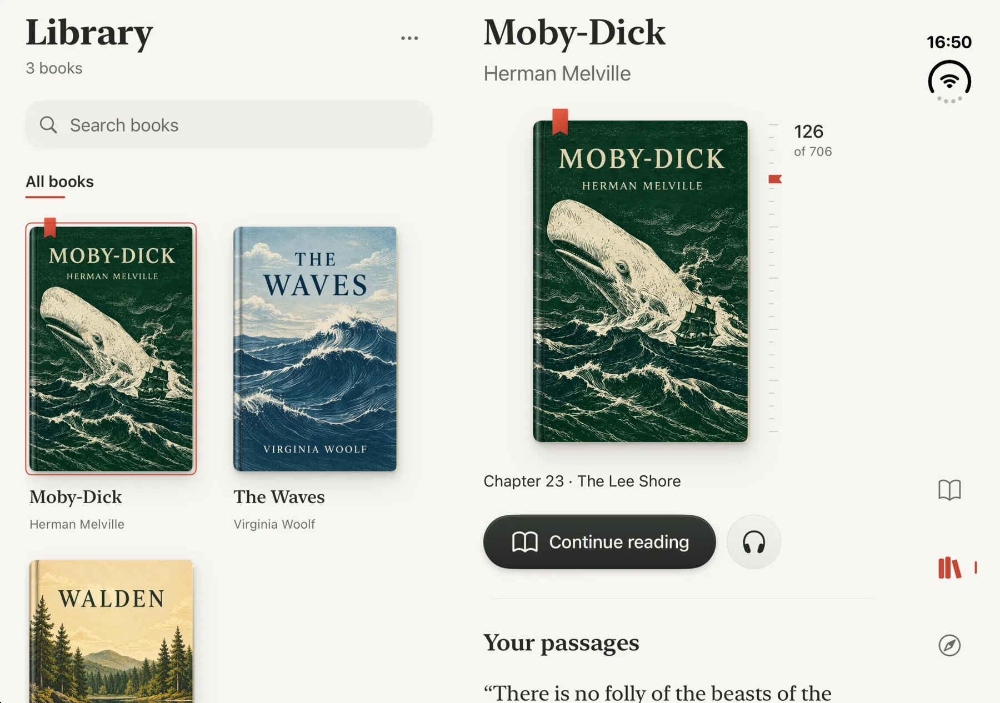
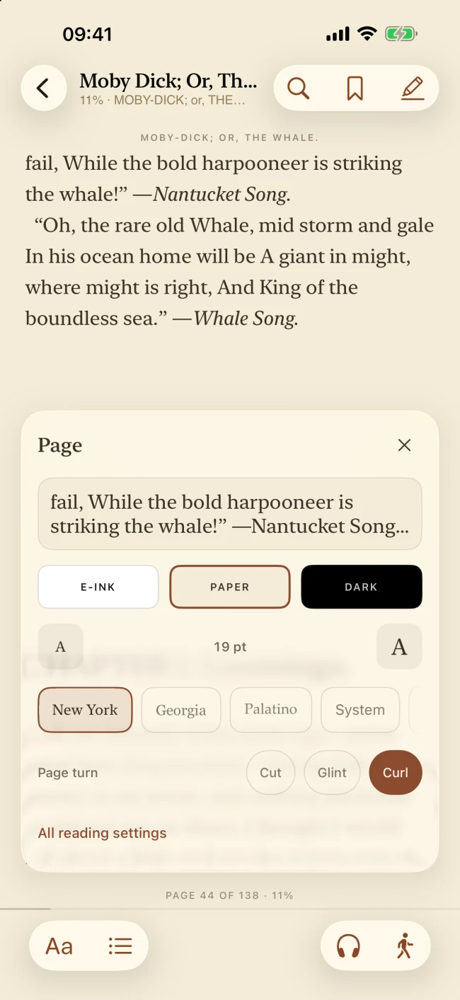
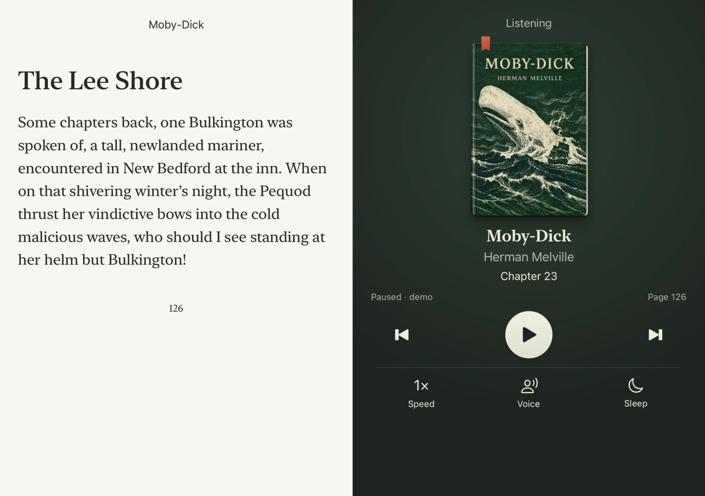

A book, wherever
it opens.
From a quiet page in your pocket to a whole library unfolding before you. Meet the next reading experience from Librox.
For the stories that stay with you.
The world falls away.
The book stays.
Librox puts the book at the center: a cover worth touching, typography made for long reading, and space for the words to breathe.
Open it on iPhone. In the Librox 2.0 Duo preview, the same library opens wider, with the book beside you and a reading spread that makes room for the story.
See the Duo previewyou forget the screen.
One story.
More room to live in it.
Librox 2.0 explores a reading space that responds to how Duo opens. A library on one side, the book on the other. The object stays familiar as the canvas changes.

Every page
is your place.
Choose paper, e-ink, or dark. Settle into the type that feels right. Read with a paced guide, or listen as the sentence follows along.
Try a reading mood on this page.

When reading
becomes listening.
Continue with on-device narration, sentence following, speed controls, and a sleep timer. The Librox 2.0 Duo preview gives listening its own quiet space.
Duo visual is a 2.0 design preview
Your shelf, your story.
Import EPUB and TXT books from Files, AirDrop, or the Share sheet.
The classics are waiting.
Explore free books from open catalogs, then send an EPUB into Librox.
Just you and the page.
No account, ads, or tracking. Your reading data can sync through your private iCloud.
Find your next book.
Search free, DRM-free books from Project Gutenberg and Standard Ebooks. Open an EPUB in Librox, or download it directly.
Searches go directly from your browser to the catalogs. “Add to Librox” opens the app; if nothing happens, install Librox or use the EPUB link.
Take a little more
time to read.
Get Librox on the App Store
Available now for iPhone and iPad. Duo visuals show the Librox 2.0 design in development.